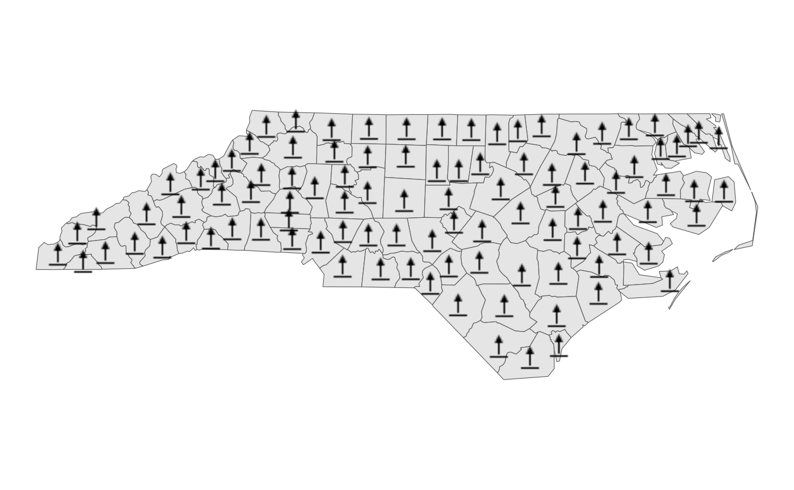
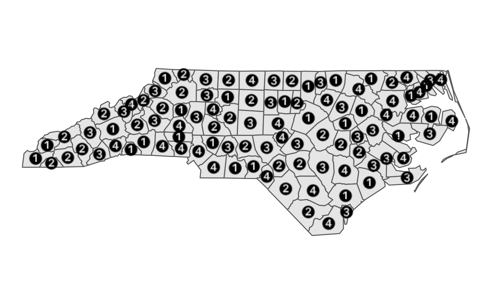

Use the ggsvg::geom_point_svg() function to plot icons using the centroids
from the input simple feature object to set the icon location.
Usage
layer_icon(
data = NULL,
iconname_col = "icon",
icon = NULL,
px = NULL,
source = NULL,
svg = NULL,
crs = getOption("maplayer.crs", default = 3857),
...
)
geom_sf_icon(
data = NULL,
iconname_col = "icon",
icon = NULL,
px = NULL,
source = NULL,
svg = NULL,
crs = getOption("maplayer.crs", default = 3857),
...
)Arguments
- data
A
sfobject. Any objects with polygon geometry are converted to points usingsf::st_centroid().- iconname_col
The column name in the input data to use as the icon name. If the name matches multiple icons, the first match from
map_iconsis used. You may provide a px or source value to select a different match if needed but, in that case, all icons must use the same px or source value. Note that the icon column should not be mapped withggplot2::aes().- icon
Icon name. Default
NULL. Ificonis provided,iconname_colis ignored. Seemap_icons$namefor supported options.- px
Icon size in pixels. See
map_icons$pxfor supported options. Optional but may be necessary to differentiate icons with duplicate names.- source
Icon source. See
map_icons$repofor supported options. Optional but may be required to differentiate icons with duplicate names.- svg
Optional. Custom file path or URL with SVG to pass to
svgparameter forggsvg::geom_point_svg(). Ificonis provided,svgis ignored.- crs
Coordinate reference system; defaults to
NULL.- ...
Arguments passed on to
ggsvg::geom_point_svgdefaultsnamed list of default values for new aesthetics
Set `options(GGSVG_DEBUG = TRUE)` for some verbose debugging which will cause `ggsvg` to output (to the console) the final SVG for each and every element in the plot.
Examples
nc <- getdata::get_location(type = system.file("shape/nc.shp", package = "sf"), crs = 3857)
basemap <-
ggplot2::ggplot() +
ggplot2::theme_void() +
layer_location_data(data = nc)
# icon can be set by name matching a name from map_icons
basemap +
layer_icon(data = nc, icon = "point-start", size = 8)
#> Warning: st_point_on_surface may not give correct results for longitude/latitude data

# layer_icon can also use a column from the sf object
nc$icon <- rep(c("1", "2", "3", "4"), nrow(nc) / 4)
basemap +
layer_icon(data = nc, iconname_col = "icon", size = 6)
#> Warning: st_point_on_surface may not give correct results for longitude/latitude data
#> Warning: st_point_on_surface may not give correct results for longitude/latitude data
#> Warning: st_point_on_surface may not give correct results for longitude/latitude data
#> Warning: st_point_on_surface may not give correct results for longitude/latitude data
